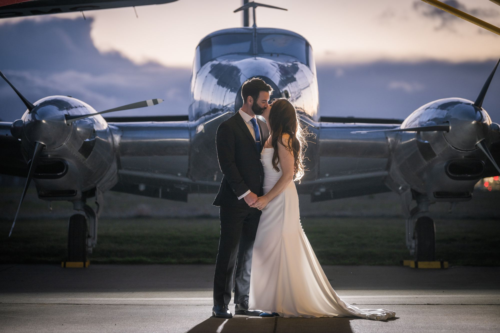

Family formal photographs are often the most dreaded part of a wedding day — for couples and photographers alike. But it doesn't have to be a chaotic, stressful sprint. With a bit of advance planning, family formals can be efficient, dignified, and even enjoyable.

The Must-Have List
Before your wedding day, sit down with your partner and create a list of every grouping you need. Be ruthless about what goes on it — every additional group costs time. A practical maximum for a smooth-running day is 10–12 formal groupings.
A standard must-have list usually looks something like this:
Bride & Groom with:
Bride's immediate family (full group)
Bride's parents
Bride's grandparents
Groom's immediate family (full group)
Groom's parents
Groom's grandparents
Both sets of parents together
Bride & Groom alone (the formal portrait)
If either partner has step-parents or blended families, have an honest conversation about groupings before the day. These can be navigated gracefully with advance communication.


Assign a Runner
The single most useful thing you can do for your family formal session is to assign one person — a bridesmaid, groomsman, or family friend — to be the designated "runner." This person's job is to gather each group before we call them, so we're never waiting for people who are somewhere else on the property.
A good runner who knows the family can have the next group assembled and ready before we've finished the current shot. This alone can save 15–20 minutes over the course of the formal session.


Timeline After the Ceremony
Family formals happen immediately after the ceremony ends, while guests move to cocktail hour. At this point, everyone is still dressed, the adrenaline is high, and there's a clear "we're done, now we do photos" energy. This is the ideal moment.
What I need from you: a clear list in order of priority. If we run short on time, the bottom of the list gets cut first — so put the groups you most want preserved at the top.


What "Formals" Actually Means
Family formals are what photographers call "posed" group photographs — everyone is looking at the camera, the composition is deliberate, and people are standing together in a composed arrangement. These are distinct from candids, which happen spontaneously throughout the day.
My approach to formals is to keep them moving with purpose, to pose people naturally (nobody needs to look stiff or uncomfortable), and to capture them efficiently. I will direct every group — where to stand, where to put hands, how to angle — so that the results are polished and the process is painless.

When the list is ready, send it to me before the wedding day and we'll review it together at our final planning call. The goal is to get everything you want without sacrificing a single minute of your cocktail hour.